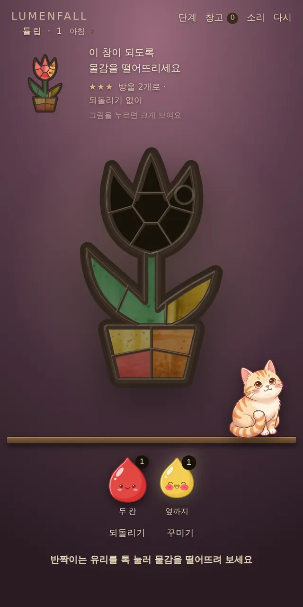
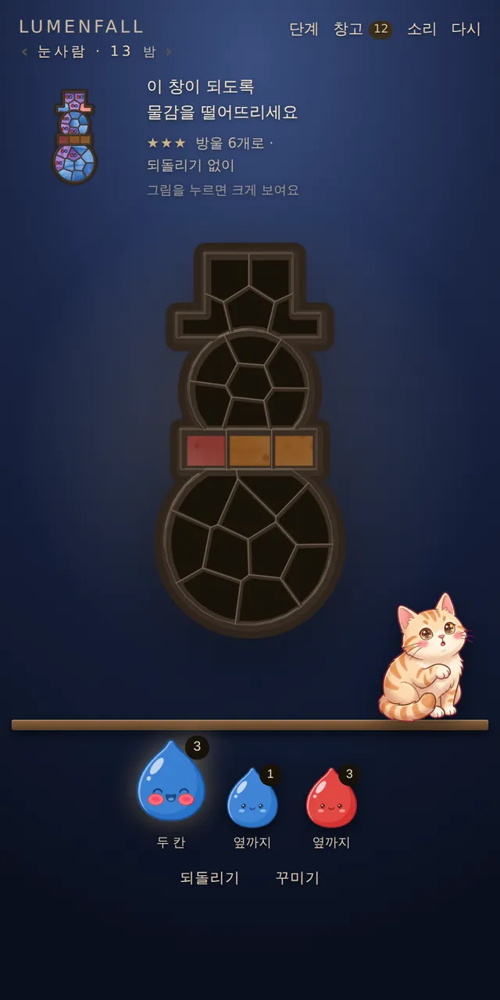
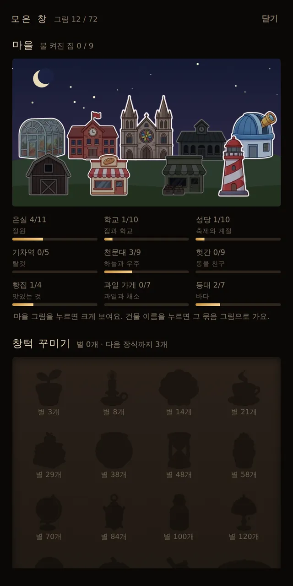

🧩 퍼즐 게임 · 무료 · 설치 없음
루멘폴
“이 창이 되도록 물감을 떨어뜨리세요”
- 한 판 30초~5분
- 그림 72가지
- 세로 화면
- 자동 저장
회원가입 없이 누르면 바로 시작돼요
어떤 게임인가요?
빛이 드는 창가에 텅 빈 스테인드글라스 틀이 하나 걸려 있어요. 창턱에는 고양이 한 마리가 앉아 구경하고 있고요.
빨강, 노랑, 파랑 물감 방울을 떨어뜨리면 색이 옆 조각으로 번지고, 두 색이 겹치면 주황·초록·보라가 돼요. 옆에 걸린 그림과 똑같이 칠하면 창 뒤에서 빛이 쏟아지며 그림이 완성돼요.
튤립, 과일, 우주, 바다, 기차, 동물 친구까지 그림은 72가지. 네 판마다 창밖이 아침에서 한낮, 저녁, 밤으로 바뀌어요.
이렇게 해요
- STEP 1
물감을 골라요
아래 물감 방울을 톡 눌러요. 방울마다 번지는 범위와 남은 개수가 적혀 있어요.
- STEP 2
유리에 떨어뜨려요
유리 조각을 누르면 물감이 떨어져 옆으로 번져요. 굵은 납선은 번짐을 막아요.
- STEP 3
그림과 똑같이!
옆의 그림과 똑같아지면 창에 빛이 들어와요. 별 세 개에 도전해 보세요.


🐈 모으고 꾸미는 재미
- 완성한 창은 「창고」 벽에 나무 액자로 걸려요.
- 그림을 모을수록 밤 마을의 건물 창에 하나씩 불이 켜져요.
- 별을 모으면 창턱을 꾸밀 장식이 생겨요. 화분, 선반, 고양이 자리까지 손가락으로 끌어 꾸밀 수 있어요.
- 단계가 올라가면 쌍둥이 유리처럼 새로운 유리가 하나씩 나타나요. 처음 나올 때 설명이 떠요.
이런 분께 추천해요
- 차분하게 머리 쓰는 퍼즐을 좋아하는 분
- 색 섞기와 예쁜 그림을 좋아하는 분
- 모으고 꾸미는 재미를 좋아하는 분
열면 바로 1단계가 나와요. 반짝이는 유리를 톡 누르면 시작이에요. 목표 그림을 누르면 창 위에 크게 겹쳐 볼 수 있어요. 별 세 개는 「방울 수 기준 이하 · 되돌리기 없이」 완성하면 받아요.
📱 어떤 기기에서 하면 좋을까요?
- 가장 좋아요휴대폰 세로로
세로 화면에 맞춰 만든 게임이라 한 손으로 톡톡 하기 좋아요.
- 가장 좋아요태블릿 세로로
유리 조각이 커서 누르기 편해요.
- 좋아요컴퓨터·노트북 마우스
화면 가운데에 세로로 보여요. 마우스로 편하게 할 수 있어요.
오른쪽 위 메뉴(⋮ 또는 ···)에서 「다른 브라우저로 열기」를 눌러 크롬이나 사파리로 열어 주세요. 앱 안에서는 전체 화면이 안 되고 저장이 풀릴 수 있어요.
🍎 아이폰·아이패드에서는
- ① 사파리로 열기
주소를 사파리에서 열어 주세요. 세로로 들고 하면 돼요.
- ② 소리
물감이 떨어지는 소리와 완성 소리가 나요. 무음 스위치가 켜져 있으면 들리지 않아요. 위쪽 「소리」 버튼으로 끄고 켤 수 있어요.
- ③ 이어서 하려면
깬 단계와 별, 창턱 장식은 그 기기에 자동으로 저장되고, 다시 열면 이어서 시작해요. 아이폰 사파리는 오래 들어가지 않은 사이트의 기록을 지우기도 하니 참고해 주세요.
🤖 갤럭시 등 안드로이드에서는
크롬이나 삼성 인터넷으로 열면 돼요. 메뉴(⋮)에서 「홈 화면에 추가」를 해 두면 바로가기가 생겨요.
▶ 바로 해 보기
설치도, 회원가입도 필요 없어요.
루멘폴 시작하기game.edoori.co.kr/lumenfall/